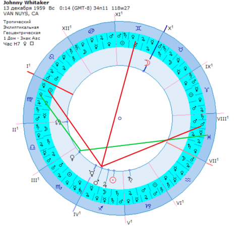

ТРИ ПЕРИОДА ЖИЗНИ В ГОРОСКОПЕ. МОЛОДОСТЬ, ЗРЕЛЫЕ ГОДЫ, СТАРОСТЬ

В этом разделе я предлагаю рассмотреть легкую и простую технику, которой пользовались древние астрологи. Даже новички с ее помощью могут сделать качественный и четкий прогноз. Все, что вам понадобится — немного терпения и ваша натальная карта.
Шаг первый. Определяем знак Асцендента.
Знак, в котором находится Асцендент, будет отвечать за юные и молодые годы. Это дом молодости. Допустим, ваш Асцендент находится в 29°Тельца. В таком случае знак Асцендента (дом молодости) — Телец. Если знак Асцендента находится в 12°Рыб, ваш знак Асцендента — Рыбы.
Шаг второй. Определяем дом зрелости.
По часовой стрелке отсчитываем десятый знак от знака Асцендента. Например, если Асцендент находится в знаке Рака, то десятый знак от Асцендента будет Овен. Если Асцендент находится в Стрельце, то десятый знак от него — Дева. Этот знак будет отвечать за середину жизни.
Шаг третий. Определяем дом старости.
По часовой стрелке отсчитываем седьмой знак от знака Асцендента. Этот знак должен находиться как раз напротив. Например, если знак Асцендента Козерог, тогда седьмой знак от Асцендента (дом старости) — Рак.
Шаг четвертый. Оценка расположения планет.
Теперь оцениваем, какие планеты находятся в знаке и какие планеты делают аспект к знаку дома. Особое внимание уделяем Юпитеру, Венере, Марсу и Сатурну. Юпитер при дневном рождении дает счастье. Юпитер при ночном рождении дает умеренную радость. Венера при дневном рождении дает умеренные блага. При ночном рождении — делает человека счастливым. Планеты Сатурн и Марс дают невзгоды и трудности.
Шаг пятый. Оцениваем управителей домов.
Теперь по очереди оцениваем управителей знака Асцендента (знака молодости), управителя десятого знака от Асцендента (знака середины жизни), управителя седьмого знака от Асцендента (знака старости). Смотрим, какие планеты управляют этими знаками. Учитываем следующее правило:
| Овном и Скорпионом управляет Марс | Тельцом и Весами — Венера |
| Близнецами и Девой — Меркурий | Козерогом и Водолеем — Сатурн |
| Рыбами и Стрельцом — Юпитер | Раком — Луна |
| Львом — Солнце |
- Овном и Скорпионом управляет Марс
- Тельцом и Весами - Венера
- Девой и Близнецами - Меркурий
- Козерогом и Водолеем - Сатурн
- Стрельцом и Рыбами - Юпитер
- Раком - Луна
- Львом - Солнце
Шаг шестой. Объединяем все показатели.
Смотрим, каких показателей больше — положительных или отрицательных, и на основе этого выносим суждение.
Пример: Карта Джонни Уайтакера.
Асцендент Джонни находится в знаке Девы, управитель Меркурий. В знаке нет планет, но к нему делает секстиль Венера. При ночном рождении Венера дает ощутимые блага. Также первый дом негативно аспектируется Марсом (умеренный вредитель при ночном рождении). Сам Меркурий — нейтральная планета. То есть в начале жизни Джонни должен иметь много радости, но также и некоторые проблемы.
В реальной жизни Джонни в детстве снимался в кино и рекламе и был востребованным актером. Его детство было трудным из-за постоянных съемок.
Дом зрелости (десятый дом от Асцендента) — Близнецы. Этот дом поражает оппозиция Марса. Аспекты от хороших планет к дому отсутствуют. Соответственно, зрелый период будет наполнен тяжелыми событиями. В реальной жизни Джонни к середине жизни потерял работу актера. Его популярность пошла на спад. Он увлекся алкоголем и наркотиками.
Дом старости (седьмой дом от Асцендента) — Стрелец. Его управитель — Юпитер (планета благ). Этот дом также поражен Марсом, но имеется положительный аспект от Венеры. Два положительных указателя против одного отрицательного обещают хорошее время. К пятидесяти годам Джонни вылечился от зависимостей и вернулся в кино. Он регулярно снимался в фильмах и телепередачах.